빵
카테고리별빵 보기


- 사진으로 보기
-
- 식빵
-
-


꿀분말과 펄슈가를 넣어 건강한 단맛과 고소한 버터 풍미로 토스트 하였을 때 가장 맛있는 식빵
자세히 보기그대로 구워먹는 꿀 토스트 식빵
-

통밀을 넣어 고소 담백하고 맥주발효종으로 풍미를 더한 식사빵. 맛있고 건강한 재료로 내 몸과 지구 모두에게 건강한 제품
자세히 보기착한빵식 통밀식빵
-

해바라기씨, 아마씨, 참깨, 귀리를 넣고 반죽한 촉촉한 식감과 입안에서 고소함이 톡톡 터지는 곡물식빵
자세히 보기고소함이 톡톡 곡물식빵
-

밤 다이스를 듬뿍 넣고, 밤 크림을 더해 풍미 UP! 더욱 커지고 촉촉하게 재탄생한 밤식빵
자세히 보기마구마구 밤식빵
-

밤 다이스를 듬뿍 넣고, 밤 크림을 더해 풍미 UP! 더욱 커지고 촉촉하게 재탄생한 밤식빵
자세히 보기마구마구 밤식빵 1/2
-

겉은 바삭, 속은 72겹의 결이 살아 있어 결결이 뜯어 먹기 좋은 고소한 버터 풍미의 정통 데니쉬식빵
자세히 보기72겹의 정성 데니쉬식빵
-

해막걸리종으로 만든 쌀 발효당을 넣은 은은한 단맛과, 탕종법으로 부드럽고 촉촉한 식감의 뚜레쥬르 시그니처 식빵!
자세히 보기순,식빵
-

곡물과 씨앗을 가득 넣고 구워 더욱 고소하고 촉촉해 샌드위치 등 식사빵으로 활용하기 좋은 제품
자세히 보기고소한 곡물식빵
-

탕종을 넣어 더욱 촉촉하고 쫄깃한 식감과 은은한 단맛이 어우러지는 담백 식빵
자세히 보기촉촉 쫄깃 탕종식빵
-

마스카포네 생크림을 넣어 극강의 부드러움과 마지막까지 은은한 단맛을 느낄 수 있는 뚜레쥬르 대표 식빵
자세히 보기生生 생크림 식빵
-
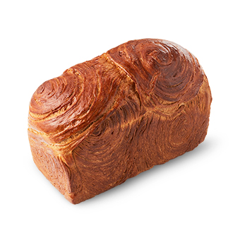
브라운버터를 넣어 풍미를 올린 촉촉하고 부드러운 빵에 바삭하고 고소한 패스트리가 만나 껍질까지 맛있게 먹을 수 있는 식빵
자세히 보기고메 버터 식빵
-
30.7% 우유 함량으로 쫄깃한 식감과 고소한 풍미가 일품으로, 통으로 제공되어 개인의 취향에 따라 두껍게 슬라이스하여 프렌치토스트로, 또는 손으로 결대로 뜯어 먹어도 좋은 식빵
자세히 보기통우유식빵
-
한층 더 촉촉해지고 옥수수 맛이 풍부한 빵 속에 고소한 옥수수 알갱이가 톡톡 씹히는 식빵
자세히 보기TLJ옥수수식빵
-

보들보들한 빵결
우유의 고소함을 가득 담은
순우유 식빵자세히 보기순수한 맛 순우유식빵
-
보들하고 부드러운 빵 속에 순수하고 진한 우유의 맛을 그대로 담은 식빵
자세히 보기순수한 맛 순우유롤(봉)
-
더 부드럽고 더 촉촉해진
신선한 우유맛 가득한
식사빵자세히 보기데일리 우유식빵
-

담백해서 샌드위치로 만들어 먹기 좋은 네모난 모양의 플레인 식빵
자세히 보기담백한 모닝식빵
-
호박의 달콤함과
검은깨의 고소함을 담은
호박 검은깨 식빵자세히 보기호박검은깨식빵
-

보들보들한 빵 결 속 풍부한 버터 향 가득! 담백하고 부드러운 모닝롤
자세히 보기폭신폭신모닝롤
-
- 건강빵
-
-
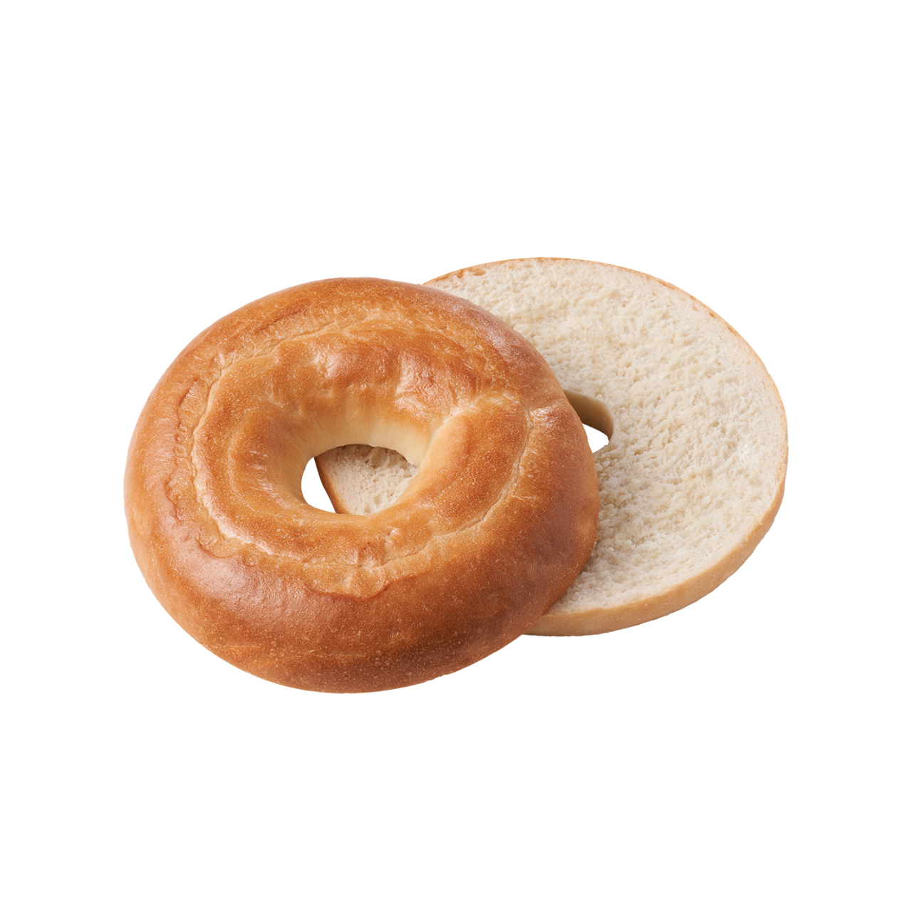
폭신하고 쫄깃한 기지에
담백한
플레인 베이글자세히 보기데일리 베이글
-
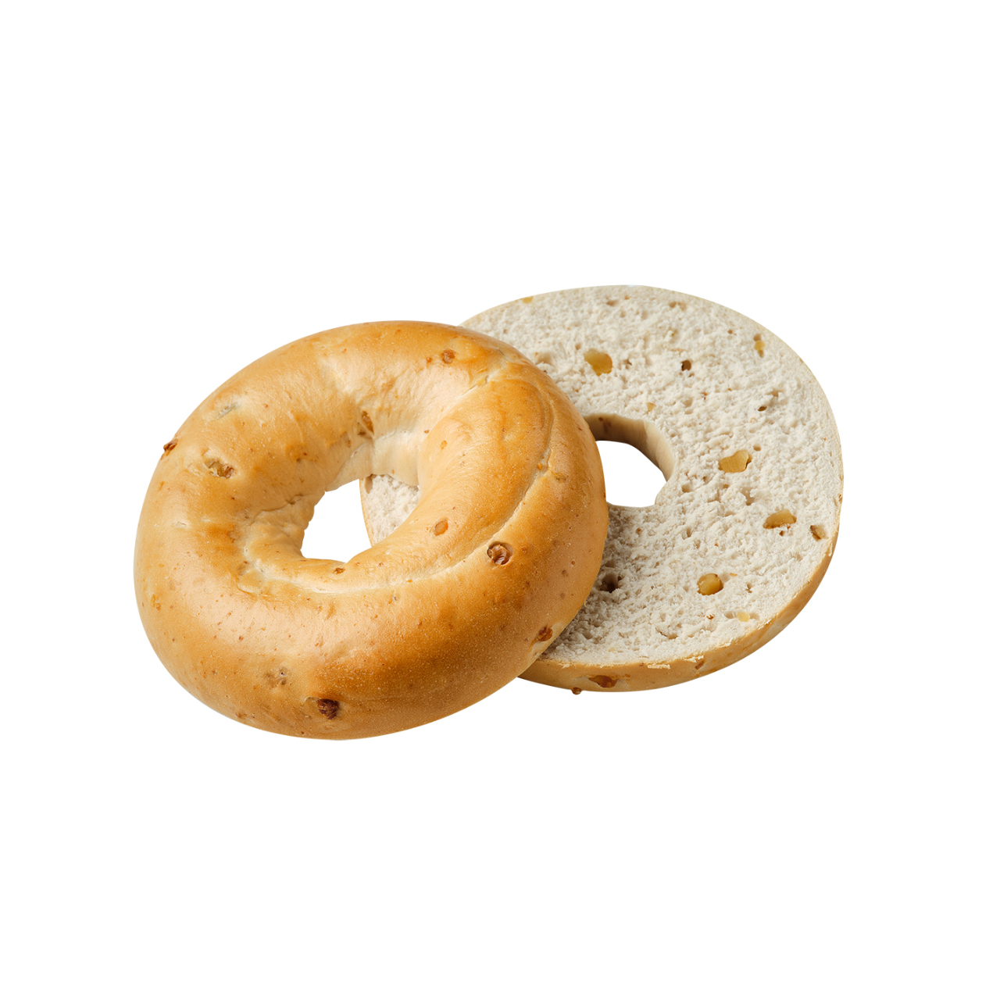
폭신하고 쫄깃한 기지에 고소한 호두가 콕콕 박혀있는 월넛 베이글
자세히 보기데일리 월넛 베이글
-
통밀을 넣어 고소 담백하고, 맥주 발효종으로 풍미와 식감을 더한 식사빵 그냥 먹기에도 좋고, 샌드위치 빵으로도 활용 가능한 건강빵
자세히 보기착한빵식 통밀빵
-
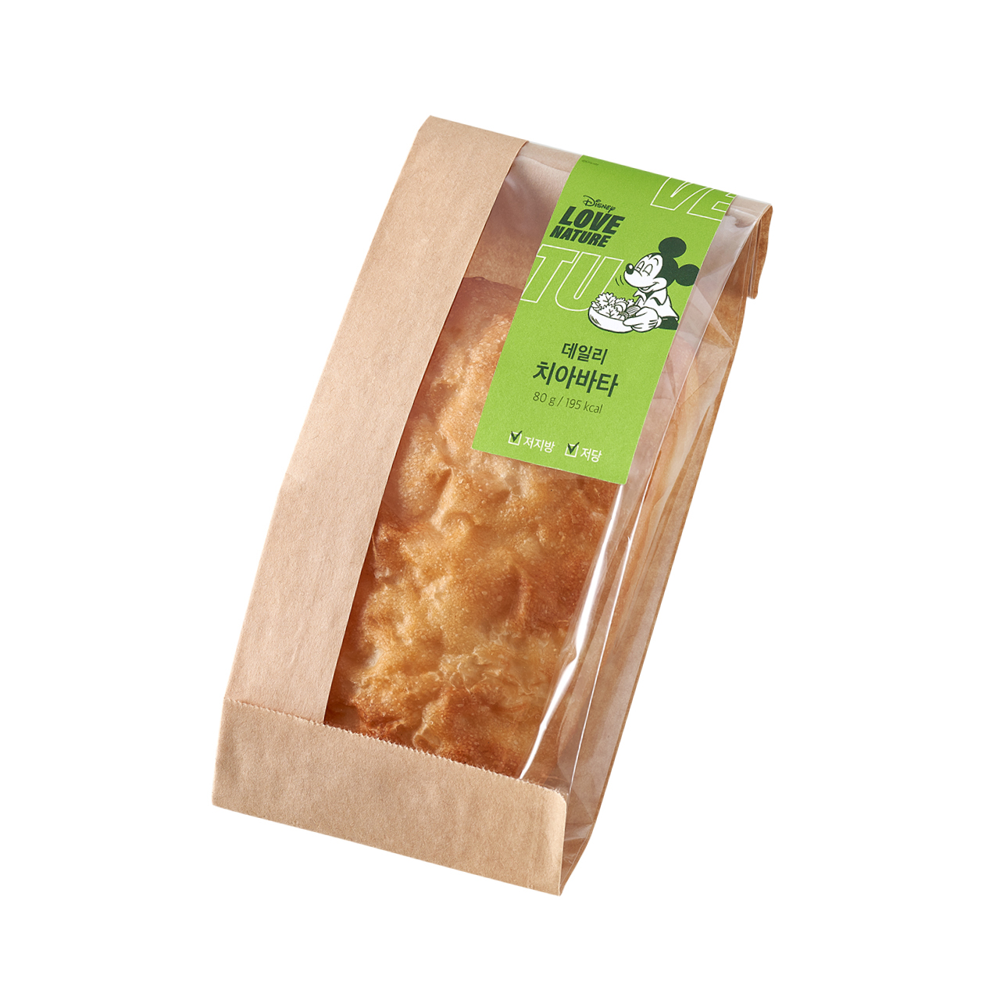
촉촉하고 포근한 식감과
은은한 단맛이 좋은
치아바타자세히 보기데일리 치아바타
-
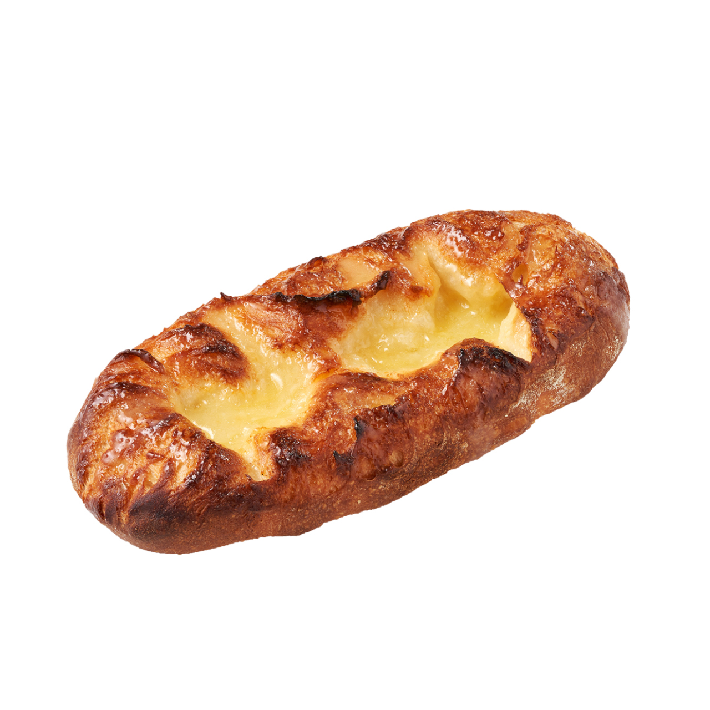
은은한 단맛의 쌀발효당과 탕종을 넣어 속이 쫄깃한 바게트에 달콤한 꿀버터를 발라 자꾸만 먹고 싶은 제품
자세히 보기겉바속촉 꿀버터 바게트
-
한 층 더 진한 풍미의 마늘 크림과 고소한 파마산 치즈를 듬뿍 올린 바게트
자세히 보기갈릭 치즈바게트
-
곡물빵에 햄프씨드를 듬뿍 올려 고소한 맛과 빵의 부드러움이 조화롭게 어우러지는 제품
자세히 보기잡곡 듬뿍 곡물브레드
-
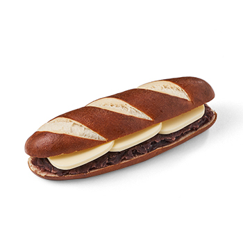
담백한 라우겐 속에 달콤한 통팥 앙금과 AOP 레스큐어 버터가 샌드된 제품
자세히 보기앙버터 라우겐
-
바삭한 바게트 속에 크림치즈, 피자치즈, 체다치즈 토핑을 듬뿍 올린 제품
자세히 보기NEW 치즈 바게트
-

담백한 라우겐 빵 속에 달콤한 연유와 AOP 레스큐어 버터가 샌드된 트렌드 인기제품
자세히 보기연유 버터 라우겐
-
.jpg)
유럽빵 고유의 담백함과 원재료 본연의 새콤, 달콤한 맛을 동시에 즐길 수 있는 유럽 건강 브레드
자세히 보기베리베리 건강브레드(소)
-
.jpg)
유럽빵 고유의 담백함과 원재료 본연의 새콤, 달콤한 맛을 동시에 즐길 수 있는 유럽 건강 브레드
자세히 보기베리베리 건강브레드(대)
-
프랑스산 밀가루가
함유된
정통 바게트자세히 보기프랑스바게트
-

고소한 바게트에
달콤한 연유버터크림이 샌드된
바게트자세히 보기호두 연유 바게트
-
진한초코릿 깜파뉴 속에 달콤한 가나슈 필링과 포레누아 초코컬이 토핑 된 브레드
자세히 보기깜파뉴 속의 리얼초코
-
부드러운 빵에
고소한 롤치즈가 쏙쏙 박혀있는
미니 치즈롤자세히 보기미니치즈롤
-
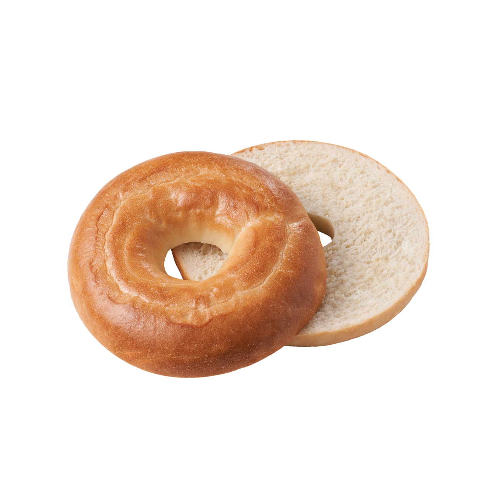
- 간식빵
-
-
소보로를 토핑한 부드러운 빵 사이에 버터크림과 딸기잼을 샌드한 대형 제품
자세히 보기클래식 딸기잼 맘모스
-

상큼한 딸기크림이 들어가 간식으로 즐기기 좋은 미니사이즈 샌드 빵
자세히 보기퐁당핑이 좋아하는 미니샌드 스트로베리
-

달콤한 연유크림이 들어가 간식으로 즐기기 좋은 미니사이즈 샌드 빵
자세히 보기꾸래핑이 좋아하는 미니샌드 연유
-
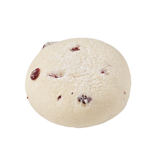
우유 초죽을 넣어 촉촉하면서 부드러운 식감을 살리고 크림치즈 본연의 맛을 살린 간식빵
자세히 보기순진 크림치즈빵
-

곡물빵에 쫄깃한 떡을 넣고 로스팅 견과를 듬뿍 올린 고소하고 달콤한 대형 사이즈 제품
자세히 보기씨앗가득 고소함이 찰떡
-
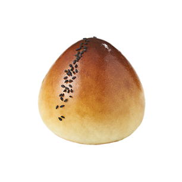
우리쌀 탕종과 막걸리종을 넣어 쫀득한 식감의 빵 속에 호두 단팥과 부드러운 커스터드 크림을 충전한 제품
자세히 보기복이가득 앙! 크림 단팥
-
진하고 깊은 커피향과 버터 커스터드 내용물을 더해 한층 업그레이드한 커피번
자세히 보기오리지널 커피번
-
달콤하고 부드러운 고구마 앙금과 바삭한 소보로 비스켓의 조화로 건강한 단맛의 간식용 소보로
자세히 보기진짜 고구마 소보로
-
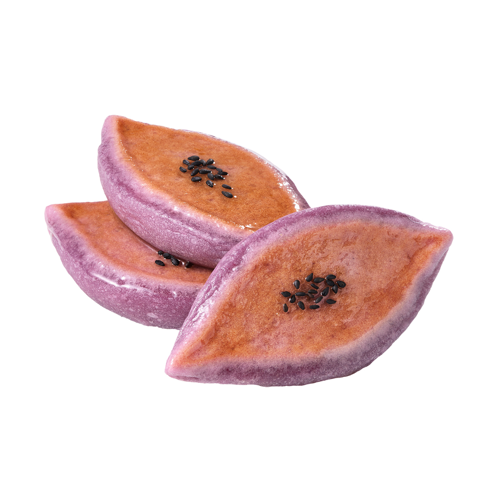
군고구마 풍미의 쫄깃한 빵 속에 부드럽고 달콤한 고구마 커스터드가 가득 들어있는 고구마 모양의 제품
자세히 보기쫀득 고구마 호떡
-
우유와 버터를 가득 넣은 브리오쉬 빵 속 달콤한 연유생크림을 가득 넣어 더욱 부드러운 제품
자세히 보기우유버터브레드
-

우유, 계란 최상의 배합비에 코코아를 넣어 쉬폰 본연의 촉촉 폭신한 식감과 은은한 초코 맛을 느낄 수 있는 제품
자세히 보기폭신폭신 한컵 초코쉬폰
-

우유, 계란 최상의 배합비를 찾아 쉬폰 본연의 촉촉하고 폭신한 식감을 느낄 수 있는 제품
자세히 보기폭신폭신 한컵 우유쉬폰
-
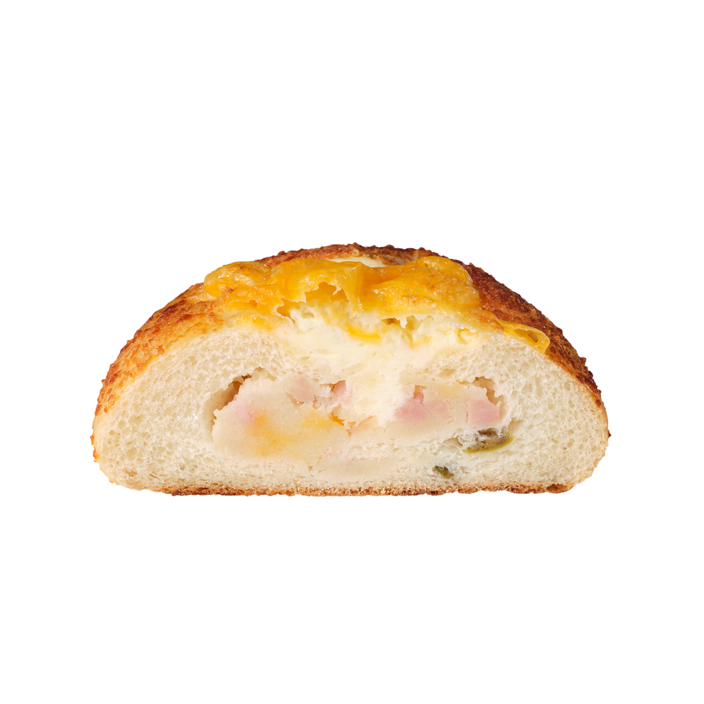
메쉬포테이토, 햄, 치즈를 넣은 내용물이 알차게 들어간 빵에 세 가지 치즈로 맛을 더한 든든한 조리형 제품
자세히 보기치즈 만난 감자그라탕
-
찰떡, 건포도, 완두콩을 넣은 부드러운 빵에 달콤&바삭한 호두머랭 토핑을 올린 달콤 고소한 매력의 제품
자세히 보기울퉁불퉁 왕 찰떡빵
-
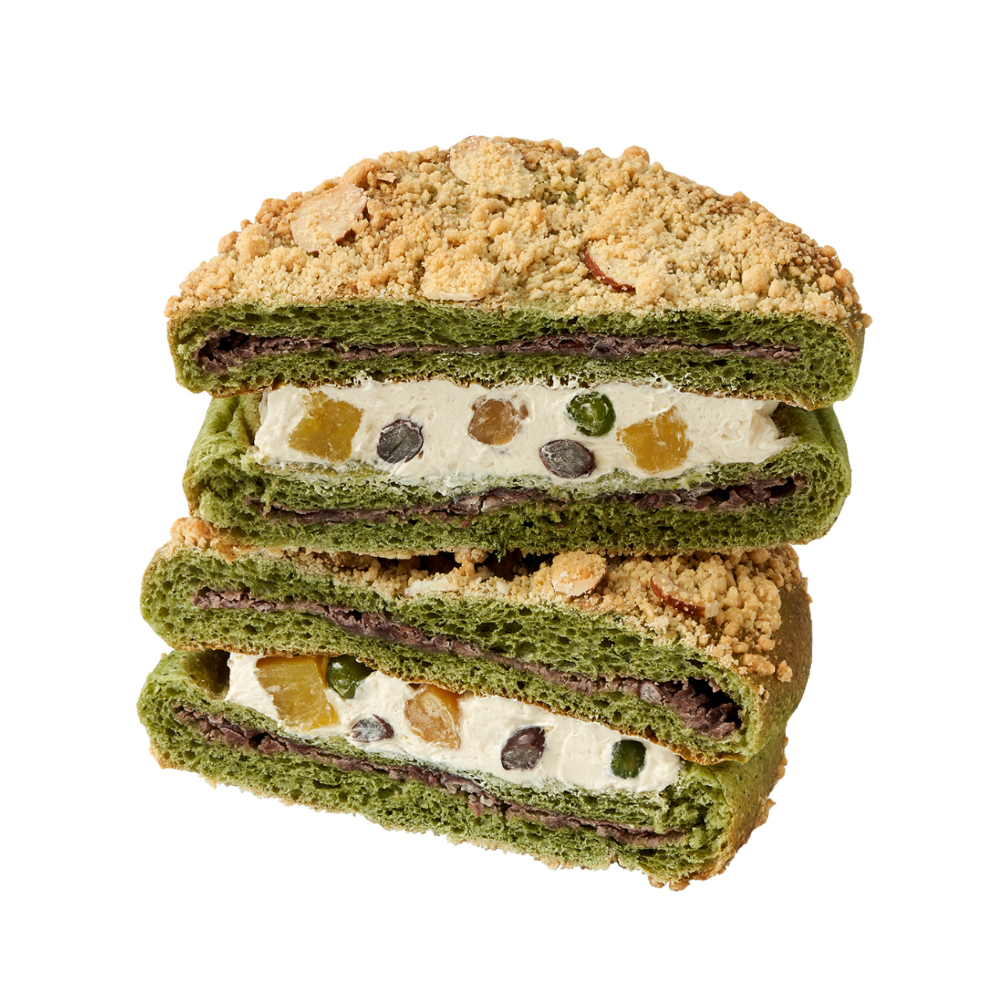
쑥향이 은은한 단팥 앙금 쑥 소보로 빵에 고구마, 콩배기를 넣은 곡물크림을 가득 샌드한 할매입맛 총집합 제품
자세히 보기쑥이 듬뿍 맘모스(대)
-

호두가 오독오독 씹히는 고소한 호두과자 토핑이 크림치즈와 어우러지는 남녀노소 모두가 좋아하는 제품
자세히 보기크림치즈 호두과자빵
-
버터의 고소함과 소금의 짭짤함이 어우러져 술술 들어가는 식사빵
자세히 보기소금버터롤
-

버터와 설탕이 녹아
더욱 달콤한
겉바속촉 토스트자세히 보기스위트토스트
-

진한 풍미의 갈릭소스와
치즈가 들어간
겉바속촉 토스트자세히 보기갈릭치즈토스트
-
- 파이/패스트리
-
-

결결이 바삭한 식감의 패스트리에 알싸한 남해 마늘의 진한 맛과 향이 더해진 간식형 제품
자세히 보기남해마늘로 만든 버터 갈릭 꽈배기
-
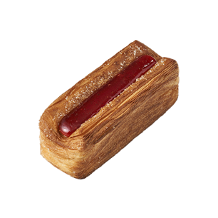
결이 바삭한 패스트리에 상큼한 딸기잼과 달콤한 크림치즈를 채운 간식빵
자세히 보기겹겹이 딸기파이
-

결이 살아있는 바삭한 패스트리에 달콤하고 부드러운 에그푸딩과 맛을 올려줄 밀크 카라멜을 더한 제품
자세히 보기패스트리에 빠진 에그푸딩
-

바삭한 파이 속 밤 페이스트와 찐 밤을 넣어 은은한 밤 맛을 느낄 수 있는 알밤 모양의 파이만주
자세히 보기알밤 파이만주
-
겹겹이 돌돌말린 달콤하고 촉촉한 패스트리에 밤 원물을 통째로 가득 넣어 뜯어먹기 좋은 밤 몽블랑
자세히 보기스위트밤블랑
-
코코넛 크림에 라즈베리잼이 상큼 달콤하게 어우러지고 코코넛 칩과 머랭으로 더욱 바삭한 제품
자세히 보기코코넛 라즈베리 패스트리
-
길쭉한 사이즈의 짭쪼롬한 소시지에 달콤 바삭한 패스트리를 돌돌 감은 믿고먹는 조합의 제품
자세히 보기회오리 롱 소시지 패스트리
-

바삭한 파이 속 진짜 고구마 다이스가 들어간 앙금을 가득 채우고, 바닥까지 달콤하고 맛있게 즐길 수 있는 제품
자세히 보기진짜 고구마파이
-

호두 소보로로 고소함을 더한 패스트리 속에 달콤함 통팥앙금과 호두 버터크림을 듬뿍 샌드한 맛.없.없 제품
자세히 보기앙!호두 버터 샌드
-

겹겹이 결이 살아있는 데니쉬에 달콤한 연유크림을 듬뿍 샌드한 간식용 빵
자세히 보기겹겹이 연유크림 데니쉬
-
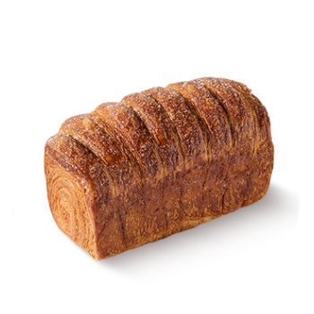
겹겹이 결이 살아있는 데니쉬에 설탕을 뿌려 구워내 달콤하게 즐길 수 있는 간식용 빵
자세히 보기겹겹이 데니쉬
-

말린 패스트리에 달콤한 시럽을 뿌려 촉촉한 식감과 풍미를 살리고 우박설탕을 더하여 마지막까지 맛있게 드실 수 있는 몽블랑
자세히 보기몽블랑의 정석
-
- 도넛/고로케
-
-

간장치킨 내용물이 듬뿍 들어있는 고로케에, 알싸하고 진한 남해마늘 소스를 토핑한 제품
자세히 보기남해마늘로 만든 마늘 치킨 고로케
-

크기는 작지만 폭신한 빵 속에 얼얼한 마라내용물이 꽉찬 알파세대 취향저격 제품
자세히 보기작다고 얕보지 마라볼
-
결결이 바삭한 식감의 패스트리에 달콤한 시나몬 설탕을 토핑한 간식형 제품
자세히 보기츄러스 꽈배기
-
햄&에그 샐러드를 빵빵하게 넣고 매콤 마요소스를 더해 계속 당기는 맛의 오픈 고로케
자세히 보기매콤 에그마요 고로케
-
깊은 풍미의 수제 딸기잼과 햄, 치즈를 단짠단짠하게 넣고 바삭하게 튀겨낸 간식형 토스트
자세히 보기바삭 몬테크리스토
-
폭신한 도넛 속
달콤한 바닐라우유크림을
가득 샌드한 제품자세히 보기퐁신퐁신 우유도넛
-

고소한 소보로를 올려 겉은 바삭하고, 속은 포슬포슬한 도넛 속 달콤한 백앙금이 가득 들어있는 제품
자세히 보기소보로만난 앙넛
-

설탕 솔솔 뿌린 바삭한 도넛 속 옥수수 알갱이가 톡톡 터지는 달콤한 콘치즈 내용물이 들어있는 제품
자세히 보기톡톡 콘치즈볼(3개입)
-

부드럽고 폭신한 식감의
달콤한
추억의 꽈배기자세히 보기옛날 꽈배기 도넛
-
더 부드러워진 소프트링 도넛에
달콤한 슈거글레이즈를
디핑한 제품자세히 보기슈거글레이즈드도넛
-

화이트초코에 딸기마카롱
후레이크를 듬뿍 얹은
달콤한 도넛자세히 보기딸기마카롱도넛
-
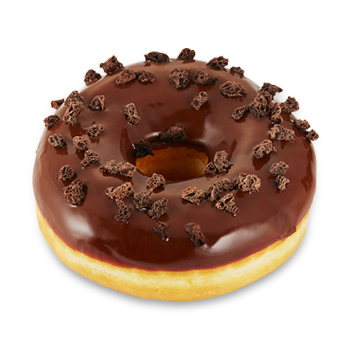
초콜릿과 초코마카롱
후레이크를 듬뿍 얹은
달콤한 도넛자세히 보기초코마카롱도넛
-
- 영양정보로 보기